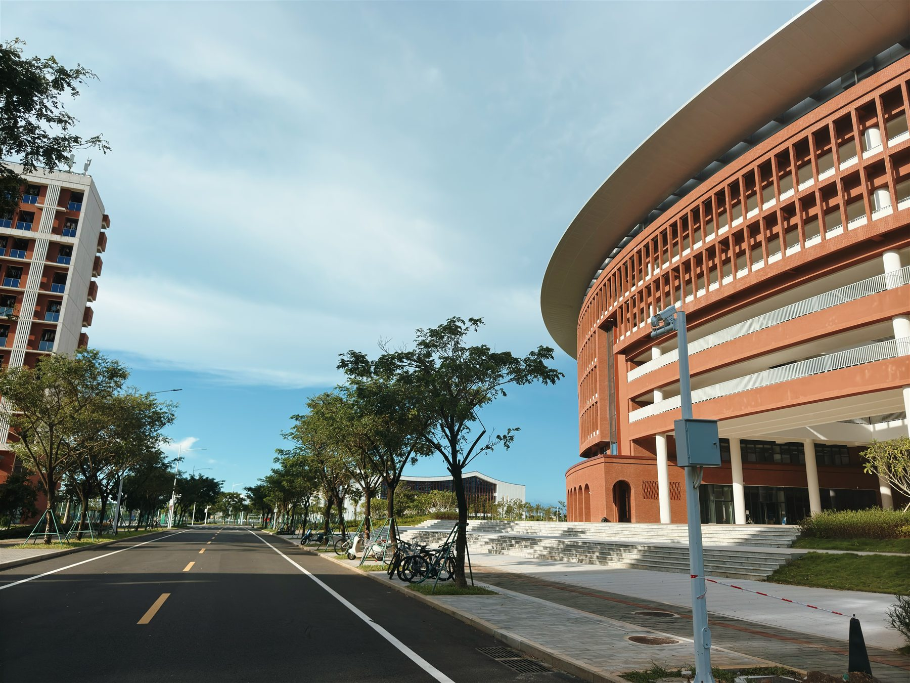
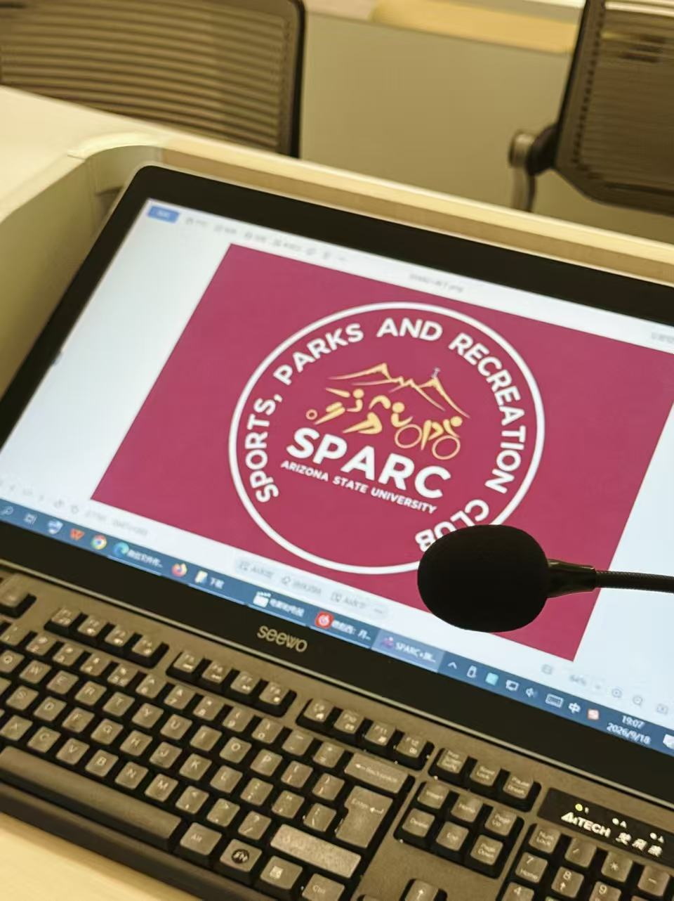
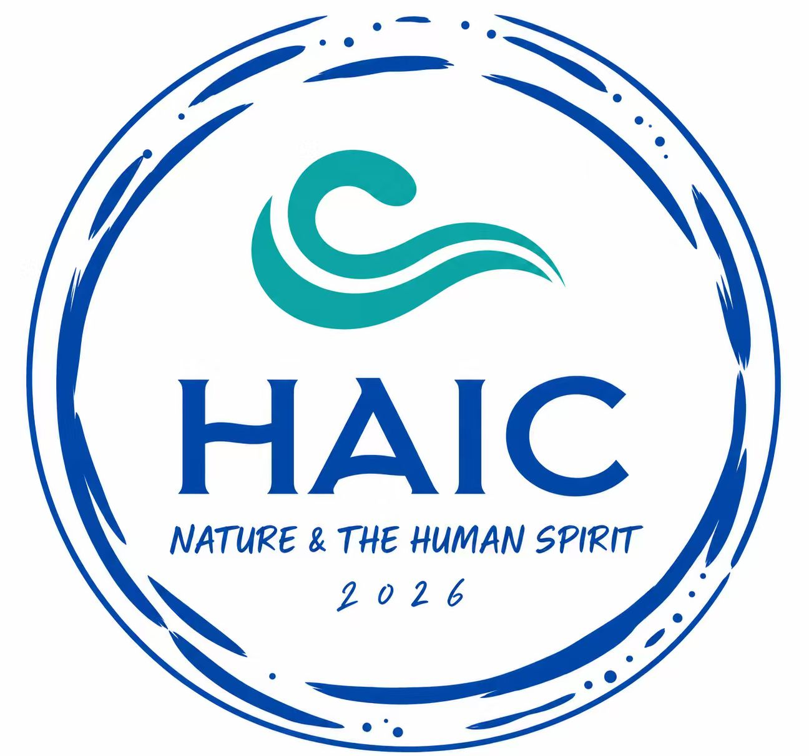

I study hospitality as a way of understanding people, places, and the experiences that connect them.
I am a Hotel Management undergraduate in the Tourism Development and Management track at the Hainan University–Arizona State University Joint International Tourism College, Class of 2029.
My work moves between student leadership, local cultural observation, and AI-assisted web and visual creation. I enjoy turning an idea into something people can actually enter, use, and remember.
Currently in Haikou, I am continuing SPARC, mentoring first-year students through U-First, and documenting Hainan through small digital experiments.

Yi Library · Hainan University Mission Hills CampusPhotographed by Zixiang
02
News
Began serving as a U-First Student Mentor for the Happiness cohort, supporting a seven-week transition and learning program.
Published new iterations of Stillwater and Century Light, two web-based experiments in personal archives and urban observation.
Returned to Qilou Old Street during the National Day period as an English-speaking volunteer guide.
Co-led SPARC's first campus event: a mindfulness welcome session for eight participants.
Joined English-language volunteer service at Haikou Qilou Old Street.
Completed Red Cross first-aid training and received First Aid and CPR+AED certificates.
03
Education
Haikou, China
Hainan University–Arizona State University Joint International Tourism College
Bachelor of Management in Hotel Management · Tourism Development and Management Track
Selected A-grade coursework
Principles of Management
Advanced Mathematics
Introduction to Environmental Science
Highlights
CET-4 · 586
ASU EUGA Certificate
Letter-grade academic system
04
Selected Projects
Web Archive
Stillwater
An evolving personal archive for learning, reflection, and visual experiments—designed as a quiet place to keep ideas in motion.
An interactive 3D workbench that turns a personal portfolio into a space to explore, using AI-assisted Three.js and Blender workflows.
Three.jsBlenderSpatial UI
CULTUREARCADEFestival concept
Cultural Festival
Culture Arcade
An independent cultural-festival proposal exploring how activities, shared space, and student participation can make cultural exchange more immediate and playful.
Event ConceptCultureExperience Design
Student Initiative
SPARC Mindfulness Welcome
SPARC's first campus gathering: an intimate mindfulness session for eight participants, planned from invitation and program flow to hosting, music, meditation, and on-site coordination.
Event DesignHostingWellbeing
05
Experience
2026.09 — Present
SPARC · Arizona State University
Co-lead Coordinator · Initiator & Core Organizer
Continuing the chapter brought from ASU and shaping its local direction. Co-led the first event from professor invitation and program design through publicity, hosting, music, meditation, and on-site delivery.

2026.10 — 2026.12
U-First · Happiness Cohort
Student Mentor
Supported a seven-week first-year program through student communication, attendance and roster coordination, activity organization, team building, on-site guidance, and faculty communication.

2026.06 & 2026.10
Qilou Old Street · Longhua District
English-speaking Volunteer Guide
Provided English interpretation and visitor guidance in Haikou's historic Qilou Old Street, helping international visitors connect with the district and its local context.
06
Certificates & Highlights
First-aid practical training · 2026.04
2026.04
Red Cross First Aid CertificateHaikou Red Cross
2026.04
CPR + AED CertificateHaikou Red Cross
586
CET-4College English Test
ASU
EUGA CertificateAcademic English program certificate
07
Snapshots
Yi Library, Mission HillsQilou Old StreetSPARC · First eventObserving Haikou in light
08 / MORE
Still learning. Still organizing. Still observing.
This site is a living record rather than a finished summary. New work will be added as it becomes real.